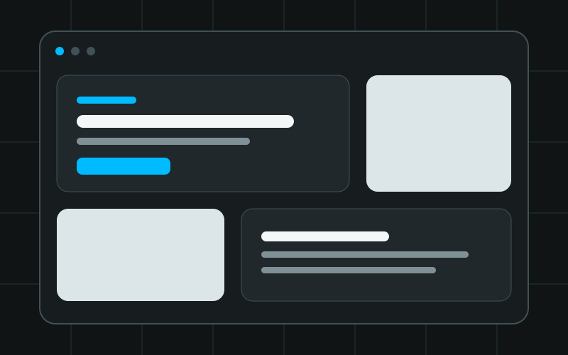

Case study / Frontend
Building a portfolio by learning the browser platform
This portfolio began as a first complete web project and grew into a responsive, accessible interface built without a framework or runtime dependency.

Overview
A real project for learning fundamentals
The site presents my frontend and Unix systems work in a compact bento layout. It combines a semantic document, a shared visual system, responsive layouts, and focused JavaScript enhancements.
The project stays deliberately close to the browser. HTML owns the content and structure, CSS owns presentation and layout, and JavaScript adds behavior only where the page needs it.
Problem and goals
Turn separate lessons into one maintainable website
Learning isolated tags and properties did not explain how a whole interface fits together. The portfolio needed to connect those lessons without hiding them behind a framework.
- Present real work with accurate descriptions and links.
- Remain readable from narrow mobile screens to desktops.
- Support keyboard navigation and meaningful page structure.
- Keep core content available when JavaScript is unavailable.
- Use motion as an enhancement rather than a requirement.
- Keep the code understandable enough to explain line by line.
Implementation
Decisions that shaped the build
Semantic HTML before visual layout
The page uses header, navigation, main, section, article, form, and footer elements to communicate purpose. One main heading introduces the page, while lower-level headings organize each content card.
Grid for page structure, Flexbox for smaller groups
CSS Grid controls the bento layout and responsive project gallery. Flexbox handles smaller one-dimensional groups such as action links and technology tags. This keeps each layout tool focused on the problem it solves best.
Design tokens shared by light and dark themes
CSS custom properties define surfaces, borders, text, focus, and accent colors. Theme changes replace token values instead of duplicating every component rule.
Small JavaScript features with independent guards
Theme controls, responsive navigation, the clock, form validation, and card reveals are separate feature blocks. Each block checks for its required elements, so a missing feature does not stop the rest of the page.
An honest contact workflow
The form validates input and prepares an encoded email draft. It does not claim to send data to a server. The visitor reviews and sends the message from their own email application.
Accessibility
Make enhanced behavior optional, not essential
Accessibility decisions were treated as part of the architecture, not a final visual check. The page starts with useful HTML and then adds interaction without removing that foundation.
- A skip link moves keyboard focus past repeated navigation.
- Visible focus indicators remain on links, buttons, and fields.
-
The mobile menu exposes its state with
aria-expanded. - Escape closes the mobile menu and returns focus to its button.
- Form labels, help text, errors, and status messages are linked.
- Reduced-motion preferences disable reveal movement.
- Without JavaScript, content and navigation remain available.
Testing
Verify behavior instead of assuming it
Each implementation phase included source checks and focused browser tests. JavaScript syntax, SVG structure, responsive layout, keyboard paths, form states, theme persistence, and reveal fallbacks were checked as the project developed.
- Run JavaScript syntax and Git whitespace checks.
- Load the page directly at desktop and mobile widths.
- Test the menu with click, Escape, and breakpoint changes.
- Exercise empty, invalid, and valid contact-form states.
- Verify theme persistence and system preference behavior.
- Confirm images reserve space and do not overflow.
A fresh screen-reader, second-browser, reduced-motion, and Lighthouse audit remains part of the planned quality phase. This case study does not describe those deferred checks as complete.
Outcome
What the project taught me
The result is a complete learning build that I can inspect and explain from document structure through interaction state. More importantly, the implementation made the boundaries between HTML, CSS, and JavaScript concrete.
- Good HTML reduces the amount of JavaScript a page needs.
- Shared CSS tokens make broad visual changes safer.
- Responsive design is a content decision as well as a layout decision.
- Fallback behavior should be designed before animation.
- Testing needs observable criteria, not a quick visual glance.
- Documentation makes each phase easier to review and extend.
Technology